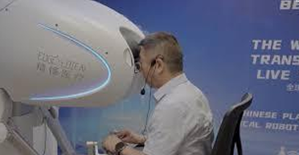
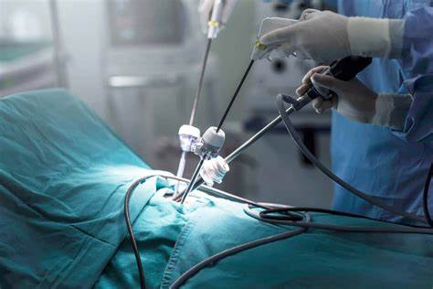
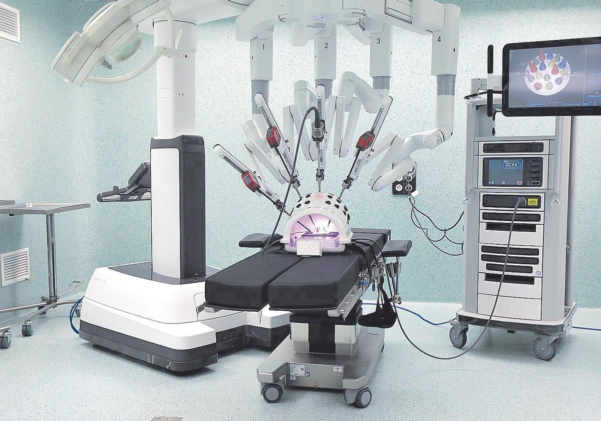

Introduction
My topic is medical robots, as I have already worked on this topic in Practical Work I. Medical robots have transformed and will further transform the global healthcare system. Above all, thanks to their precision, which will make it possible to perform operations that are currently impossible or very risky simply because of the precision required. Robots are not here to replace doctors, but to help them achieve better results. This means that the greatest beneficiary will be the patient, as he or she will get better treatments.
Below, we will be able to look at three types of medical robots.
Remote-Controlled Surgery
Remote-controlled surgery refers to the ability for surgeons to perform operations from a different location than the patient by utilizing robotic systems and advanced telecommunication technology. These surgeries make use of robotic arms equipped with precision surgical tools such as scalpels, suturing devices, graspers, clamps, and cauterizing instruments. The robotic arms are manipulated through a computer console that provides surgeons with a high-definition 3D view and real-time visual feedback of the surgical site.
- Facilitates surgeons to operate on patients in remote areas where specialists are not readily available.
- Improves precision and eliminates issues such as hand tremors during procedures.
- Ongoing develpments, such as haptic feedback, aim to replicate the sensation of direct tissue contact.
- Demands reliable, high-speed internet connections to ensure low latency and safety.
- High costs render the technology inaccessible to underserved regions.
- Extensive training is required for surgeons, technicians, and nurses.
Key Advantages:
Challenges:
Despite these challenges, advancements in robotics, artificial intelligence, and telecommunications indicate that remote-controlled surgery will likely become more practical, widespread, and beneficial in the future.
Minimally Invasive Surgery
Minimally invasive surgery (MIS) represents a surgical technique designed to minimize trauma and decrease recovery time by employing small, precise incisions; this contrasts with the larger incisions necessitated by traditional surgical methods. However, this approach provides numerous advantages. These include decreased postoperative pain, quicker recovery, reduced hospital stays, minimal scarring and lower risks of infection. Although these benefits are significant, the adoption of MIS can be limited by various factors, including the surgeon's experience and the complexity of the procedure.
- Employs sophisticated devices (for example: laparoscopes), which are slender tubes equipped with cameras and lights that facilitate high-definition internal visualization.
- It incorporates instruments such as clamps and scissors to conduct procedures through minimal incisions.
- Robotic systems significantly enhance precision, stability and the range of motion; however, they exceed the capabilities of human hands because of their advanced technology.
- Surgeons require advanced training to perform these operations.
- Not all patients qualify for MIS due to factors like medical conditions or prior surgeries.
Key Advantages:
Challenges:
As technology continues to advance, minimally invasive surgery is always evolving. AI assumes a significant role, simplifying surgical planning, enhancing precision and analyzing real-time data to boost safety and effectiveness. These innovations aim to render surgical procedures more personalized, less invasive and safer, although they also aim to accelerate recovery and improve patient outcomes. This continuous evolution is crucial because it addresses the diverse needs of patients effectively.
Surgery Without Human Intervention
Surgery without human involvement is a vision of the future of medicine in which treatments and operations are carried out on their own without the assistance of a human surgeon. Current technology can only do simple operations like cutting and suturing, but improvements in robots and AI are necessary to make this idea a reality.
Key Fields of Development:
- An example is the Da Vinci system, a leading surgical robot that performs precise, minimally invasive procedures using a console-controlled interface. It reduces human error through extreme accuracy. Below, we can appreciate the lastest version, Da Vinci 5. 
- AI systems are pivotal in analyzing medical data, detecting abnormalities, and planning surgeries.
- AI acts as the "brain" of autonomous surgery, creating personalized preoperative plans based on patient data, predicting optimal actions, and reducing human error.
Surgical Robots:
Artificial Intelligence:
Although the technology for autonomous surgery is still in its early stages, its evolution has the potential to revolutionize medicine. Combining robotics and AI will improve surgical precision, minimize risks, and enhance patient outcomes, marking a significant leap in medical innovation.